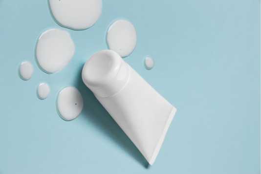
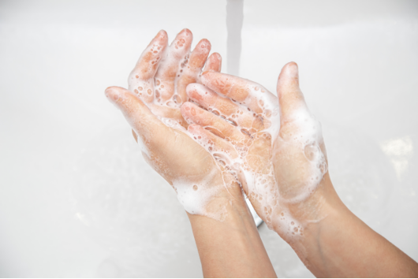
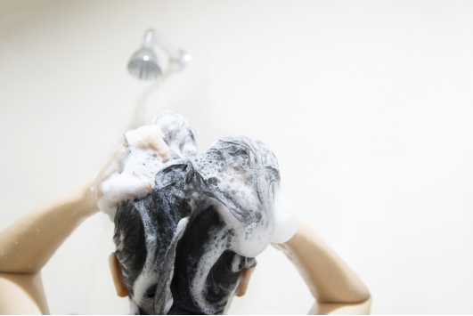

Industry Information
Home > News > Industry Information > Essential Chemicals in Personal Care Cleansers: Shampoo, Body Wash, and Facial Cleanser Ingredients
Aug. 12, 2024
In products like shampoos, body washes, and facial cleansers, a variety of chemical components work together to achieve the desired effects. These chemicals contribute to cleansing, moisturizing, conditioning, and preserving the product. Among these, surfactants stand out as the most crucial. Surfactants are responsible for reducing surface tension, allowing the product to mix with water and oils. This action is vital for effectively removing dirt, oil, and impurities from the skin and hair. They also create a rich lather, improving the cleansing experience, and ensure that the product spreads evenly and feels smooth on application. Surfactants help maintain the skin and hair’s natural moisture, providing gentle yet effective cleansing.
Additionally, they contribute to the texture, consistency, and stability of the products, making them essential in personal care formulations. This combination of cleansing, foaming, and conditioning roles highlights the importance of surfactants in delivering the benefits expected from personal care products.
Personal care cleansers like shampoos, body washes, and facial cleansers are essential for maintaining personal hygiene and skin health. The effectiveness of these products depends on the carefully selected chemicals in their formulations. This article will reveal the secrets of surfactants commonly used in personal care cleansers, focusing on five key surfactants. We will provide a detailed overview of their roles and benefits in these everyday products.

In Personal Care: SLS is a potent anionic surfactant widely used for its excellent foaming and cleansing abilities. It effectively breaks down oils, dirt, and impurities, making it a staple in shampoos, body washes, and facial cleansers. Additionally, its high-foaming nature makes it desirable for creating a rich lather, enhancing the user experience.
In Other Industries: Beyond personal care, SLS is employed in household cleaning products, where its powerful cleaning ability is leveraged for removing tough stains. In the textile and leather industries, SLS serves as a wetting agent, enhancing the absorption of dyes and other treatments, thus improving the quality and longevity of fabrics and leather goods.
In Personal Care: Cocamidopropyl Betaine is an amphoteric surfactant, valued for its mildness and ability to reduce irritation from harsher surfactants like SLS. It stabilizes foam, creating a luxurious lather while also conditioning the skin and hair, making it a versatile ingredient in shampoos, body washes, and facial cleansers.
In Other Industries: Beyond personal care, this surfactant is a common ingredient in dishwashing liquids and hand soaps due to its excellent foaming and cleaning properties. Additionally, it functions as an antistatic agent in hair conditioners, enhancing manageability, and as a thickener in various formulations, ensuring product stability and consistency.

In Personal Care: SLES is a milder alternative to SLS, providing gentle cleansing with reduced irritation. It is commonly used in formulations for sensitive skin, where its ability to produce a stable and gentle foam makes it ideal for shampoos, body washes, and facial cleansers.
In Other Industries: SLES's versatility extends to household cleaning products and car wash solutions, where it effectively breaks down oils and dirt. In industrial applications, SLES serves as an emulsifier, helping to mix and stabilize various chemical components, and is also used in some toothpaste formulations to aid in the cleaning process.
In Personal Care: ALS is favored for its rich foaming capabilities, making it a key ingredient in high-foaming products like shampoos and body washes. Its effectiveness in cleansing the skin and hair while maintaining a luxurious foam texture makes it popular in various personal care formulations.
In Other Industries: ALS's foaming properties are also utilized in household cleaning products and car shampoos, where it helps lift and remove dirt and grime. Additionally, ALS is employed in degreasers for its ability to break down heavy oils and grease, making it useful in industrial cleaning applications.
In Personal Care: Laureth-7 is a mild nonionic surfactant that provides gentle cleansing, stabilizes foam, and improves the texture and consistency of personal care products. Its non-irritating nature makes it suitable for sensitive skin formulations, ensuring that products like shampoos, body washes, and facial cleansers are both effective and gentle.
In Other Industries: Laureth-7 is also used as an emulsifier and solubilizer in pharmaceuticals, aiding in the stable mixing of active ingredients. In textile and paper processing, it improves the quality and finish of products. Additionally, Laureth-7 finds application in household cleaners and industrial formulations where mild surfactants are needed to maintain product performance while minimizing irritation.
These surfactants are indispensable in personal care products, providing essential functions like cleansing, foaming, and conditioning. Their versatility extends beyond personal care, playing crucial roles in various industries, from household cleaning to textiles, demonstrating their broad utility and importance.

I hope this article has provided you with useful information and helped you gain a basic understanding of surfactants in personal care cleaners. These are some of the most common but easily overlooked chemical components in our lives, and understanding them can help us choose the products that suit us best. If you want to learn more about other chemical products, please follow our website, where we will continuously update relevant content. Allow me to introduce myself at the end of the article.
GOLIATH is a leading supplier of high-quality personal care chemicals. Our extensive product range includes innovative and sustainable ingredients tailored to meet the diverse needs of the cosmetics industry. With a commitment to quality, safety, and environmental responsibility, GOLIATH provides reliable solutions that help manufacturers create effective and eco-friendly personal care products.
Visit our website GOLIATH Cosmetics to explore our full range of personal care chemicals and learn how we can support your cosmetic formulations.

Goliath Ingredients Holding Limited
1st Floor, Ellen Skelton Building, 3076 Sir Francis Drake’s Highway, Road Town, Tortola, VG1110, British Virgin Islands.
henry@goliathholding.com
Navigation
Email: henry@goliathholding.com